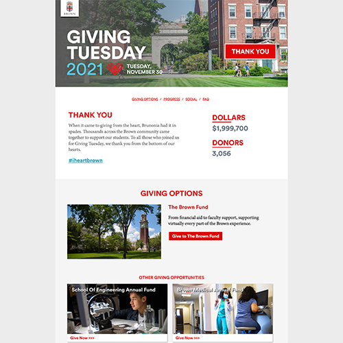
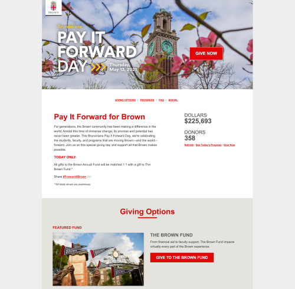
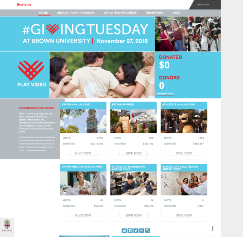
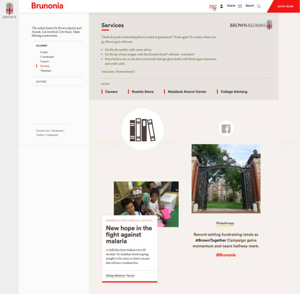
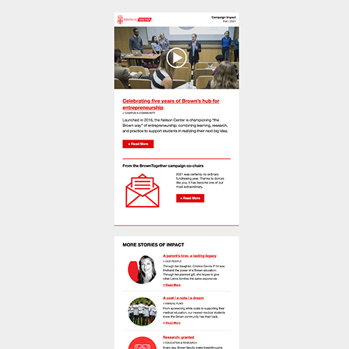

About
I’m Courtney “Court” Ellis Smith, a Web Communications Designer at Brown University. I specialize in is spinning up sites with semantic HTML5 and creating graceful and fluid mobile-first sites using CSS/Sass. (Like this one!) I love the right brain/left brain of design with front-end development and the challenge of an ever-changing field. On my days off, I enjoy reading, playing video games, ice skating, and exploring. I’m excited to help you bring your designs to life!
Email me LinkedIn
Skills
Computational and Coding
- Semantic HTML5, CSS3 (including animations), Sass, Koala, JavaScript, Bootstrap, Flexbox
- Cross-browser, mobile-first, fluid and responsive design for the web with a focus on accessibility
- Drupal, Wordpress, BBIS and BlackBaud CRM
- UI/UX, Invision
- Designing, coding, and testing responsive emails that perform in all major clients
- Agile workflows, Jira, Github and TFS basics
- Adobe Illustrator, InDesign, Photoshop, Dreamweaver
Language
- Japanese: Reading, writing, and speaking knowledge
- Spanish: basic reading and writing
Work
Websites
Giving Tuesday 2021

Giving Tuesday, the Tuesday after Thanksgiving, has become a major fundraising day for Brown in recent years. I build these pages locally with semantic HTML5 and Sass, then break it apart to load piece by piece into our CMS, BBIS. Then I test locally and in Browserstack, run through reviews with the larger team, and manage delivery of various content pieces. I soft launch a before state of the site 2 weeks early. Next comes an after-hours launch, where I switch to the "day of" state, which involves content updates and firing off the real-time progress charts. The giving day I monitor the site, then afterwards I turn it off, to the "after the day" state. This Giving Tuesday raised nearly $2M for the university.
Bruno Gives Back Day 2021

Bruno Gives Back Day is our newest giving day, and highlights fundraising for the Brown Bears sports teams. Similarly, I hand-code the semantic HTML5, style with Sass, and add design as neessary. Then I go through a round of reivews, test, and launch before, during, and after states. This sports-centered giving day site compiles the results differently, to create a spirit of competition amongst teams.
Pay it Forward Day 2021

Pay It Forward Day is a day of goodwill in late April and Brown encourages alumni to support their university and current students. This page is mobile-first, coded semantically, and rendered with Sass. I likewise partner with multiple different departments to coordinate content retrieval and meet deadlines. This page also includes a before, during, and after state that must switchover on the dot. This giving day raised $1.8M for Brown.
Giving Tuesday 2020

Another multi-state fundraising day page, including real-time charts, resources for volunteers, and social integration. Built mobile-first with Sass and semantic HTML5. Giving Tuesday 2020 raised $4.5M for Brown.
Bruno Gives Back Day 2020

A similar design to the previous year, we aimed to build brand recognition for this new giving day. The site included multiple phases to build excitement and updating tallies as gifts rolled in.
Giving History Page

This page is in the logged in state of myBrown and pulls up your comprehensive giving history to the university. I designed, wrote the HTML and Sass, and worked with back-end developers to integrate this page into our system. I reiterated on feedback, tested, and launched. This page is also mobile-first.
Giving Tuesday 2019

A three-page "microsite" for fundraising during Giving Tuesday. Like the others, it had a before, during, and after state as well as including a countdown to the day, social integration, and information for volunteers. Giving Tuesday raised $3.7M for the university.
Bruno Gives Back Day 2019

Bruno Gives Back Day has a similar premise to the other giving days, while meeting needs specific to the Sports Foundation. I created and tested a mobile-friendly site that would load invididual fundraising totals for nearly 30 sports teams.
Pay it Forward Day 2019

Pay It Forward Day 2019 presented a similar format but new details. We designed together and I implemented a new chart area (fluid, of course), for the top 3 classes area. This was also a microsite with multiple pages and stages that had to be manually managed and launched.
Giving Tuesday 2018

In 2018, we started fundraising for Giving Tuesday, the Tuesday after Thanksgiving. Similar to Pay It Forward Day, I managed, maintained, built, tested, and coded this site from scratch. It is mobile-first, fluid, incorporates multiple elements over various pages, and uses Sass.
Black Alumni Reunion

To commemorate the 50th anniversary of the Black Student Walkout, Brown hosted the Black Alumni Reunion event. This multi-page site was built, tested, and managed by me, with some design input as well. It's optimized for mobile and written in Sass. It included a countdown, social media feed, event download, and several pages about the event. Participants wrote in to tell us how much they enjoyed this gathering with their classmates.
Pay it Forward Day 2018

Pay It Forward Day is a day of dedicated fundraising, often with alumni-sponsored challenges, that happens at the end of every April. Working with graphic designers, I created this "microsite" first locally and then transferred it into the BBIS CMS. It's mobile-first and fluid, with various automatically updating charts for monitoring giving day progress. It also included a countdown, video, and pages of informational content, which I managed and uploaded. The giving day raised $2.3M for the university.
Brunonia Navigation Mockup

A UI/UX project, I was asked to mockup some navigational changes for the Brunonia site (see below). These updates are in the top login area and the sidebar.
Brunonia Website

Shortly after joining Brown, I helped to build out Brunonia in our new Drupal platform. I created stories and articles, and worked on the design for the logged in experience in BBIS. This site was a major informational hub for university events, fundraising information, and the real-world results from the campaign. (Brunonia was retired in the Summer of 2020.)
Emails
Campaign Impact Newsletter

With partnership across teams, I designed, tested, and continue to send this quarterly update about progress for the university's current campaign. The BrownTogether Campaign is our major source of fundraising and helps fuel many aspects of university life, including research and scholarships. It often raises thousands of dollars for the university.
Alumni Newsletter

Working with partners in Alumni Relations and Content and Strategy, I designed, revised, tested, and ultimately launched and sent this newsletter. Brown’s alumni body is around 90,000 people, and this newsletter keeps them all in touch with happenings at the university.
Education
Georgia Institute of Technology
- Bachelor of Science in Computational Media
- Minor in Japanese
Rhode Island School of Design
- Continuting Education Certificate: Interactive Design
- Adobe PhotoShop
- Adobe InDesign
- Web Architecture
- Applied Color
- Interactive Design: Introduction
- Cascading Style Sheets
- Design
- JavaScript
- Digital Design Techniques
- Interactive Design: User Interface